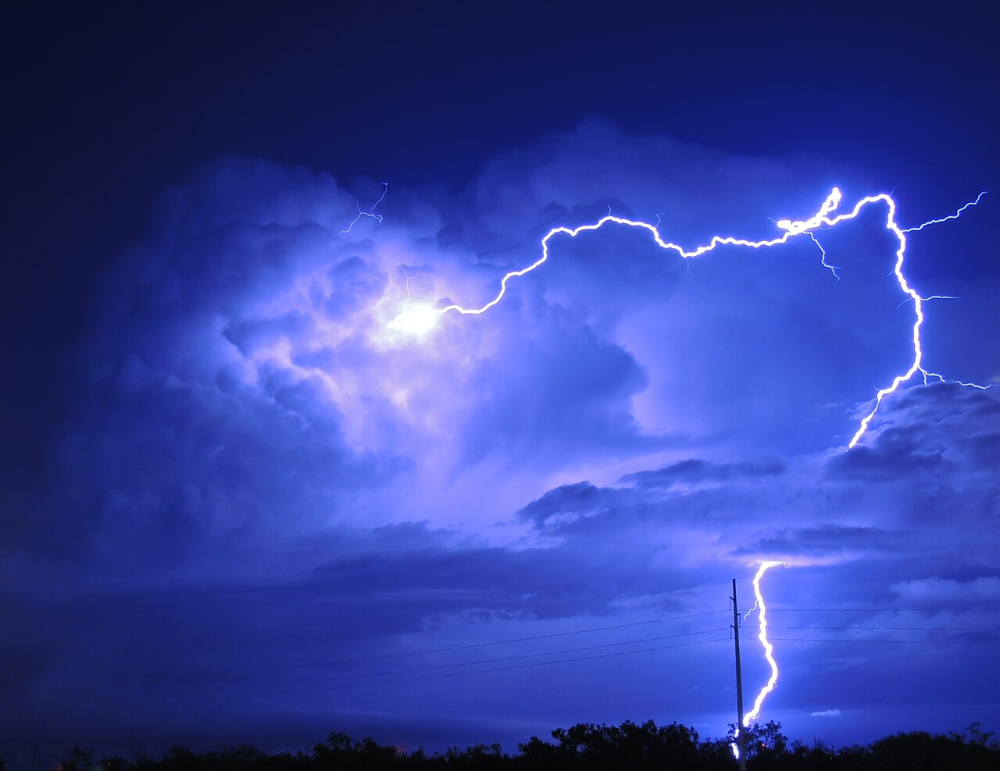
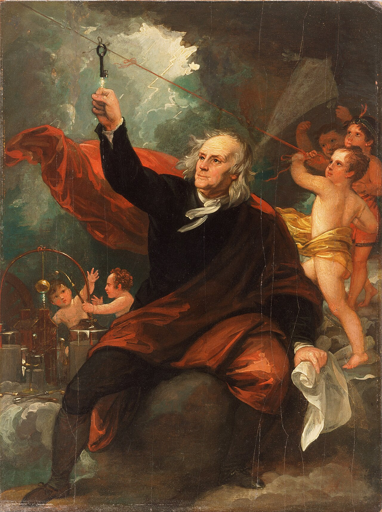
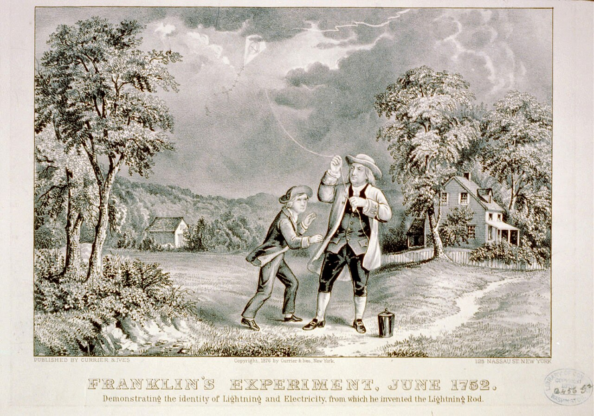
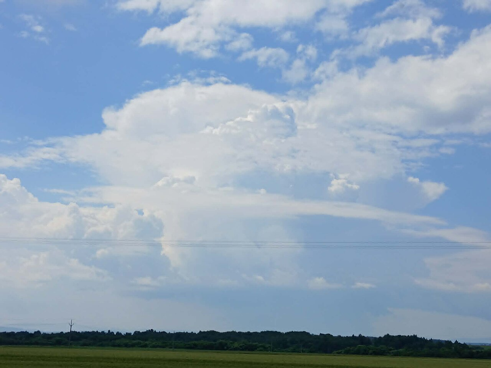
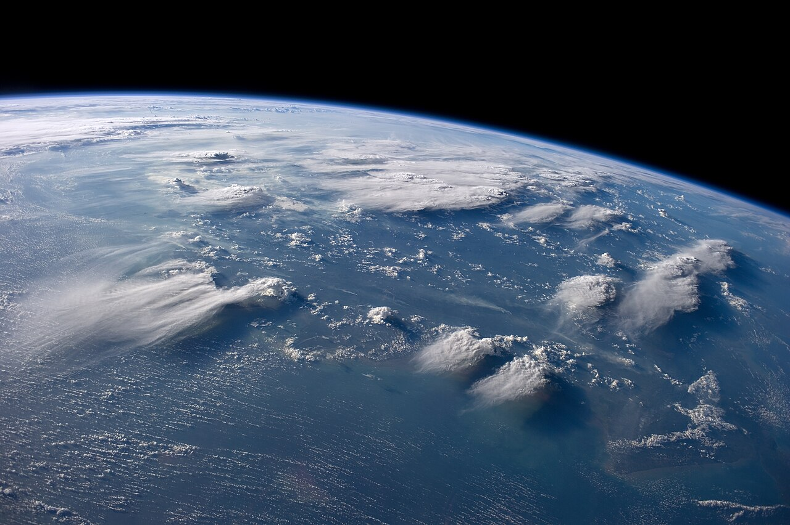
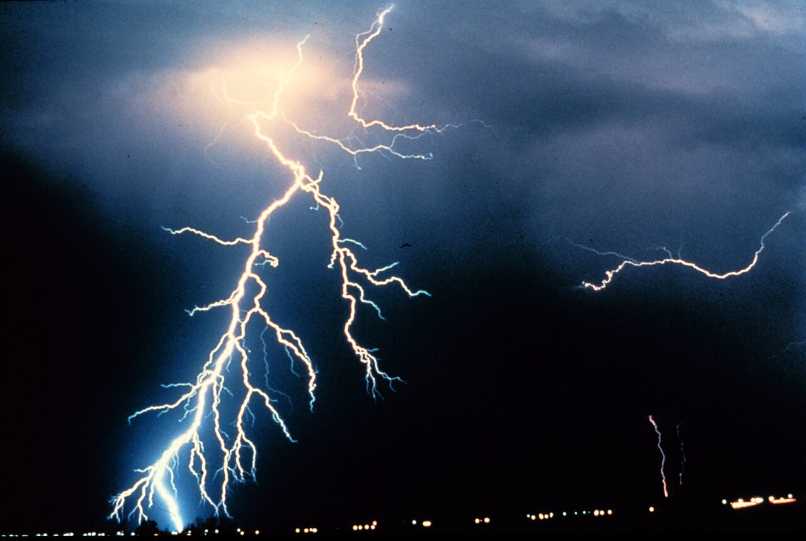
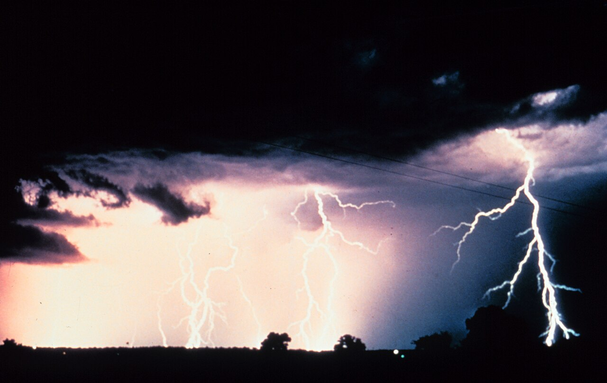

アメリカ、1752年6月。雷雨の中、ベンジャミン・フランクリンは凧（たこ）を揚げていたと伝えられています。凧糸の先につけた金属の鍵に指を近づけると、パチッと火花が飛んだ。雷が電気であることを確かめた実験として知られています。
それから270年あまり。いまでは、地球のどこかで1秒に約44回も雷が光っていることがわかっています。けれど、雲はただの水や氷のつぶの集まりです。電池もコンセントもない空の上で、どうしてあれほどの電気が生まれ、地面まで落ちてくるのでしょうか。

ピカッと光ってゴロゴロと鳴る雷の正体は、雲の中にたまった電気です。その電気はどこから来て、どうやって地面まで届くのか。雲の断面図と、一瞬の落雷を分解した図で、のぞいてみませんか。
アメリカ、1752年6月。雷雨の中、ベンジャミン・フランクリンは凧（たこ）を揚げていたと伝えられています。凧糸の先につけた金属の鍵に指を近づけると、パチッと火花が飛んだ。雷が電気であることを確かめた実験として知られています。
それから270年あまり。いまでは、地球のどこかで1秒に約44回も雷が光っていることがわかっています。けれど、雲はただの水や氷のつぶの集まりです。電池もコンセントもない空の上で、どうしてあれほどの電気が生まれ、地面まで落ちてくるのでしょうか。


雲の中で氷のつぶがぶつかり合って電気をため、空気が耐えきれなくなったところで一気に流れるから。
雷を生むのは、夏の夕立などで見る、もくもくと高く伸びる「積乱雲」です。気象庁によると、雷雲の背の高さは夏で7km以上、冬でも4km以上になります。雲の中では強い上昇気流が吹き、上のほうは氷点下のとても冷たい世界です。
そこには、小さな氷のつぶ「氷晶（ひょうしょう）」と、少し大きく重い氷のつぶ「あられ」があります。上昇気流にもまれてこの2つがぶつかり合うと、電気が分かれると考えられています。下じきで髪をこすると静電気が起きるのと、少し似ています。単純化すると、軽い氷晶はプラスの電気を持って雲の上へ運ばれ、重いあられはマイナスの電気を持って雲の下のほうにたまります。


空気は本来、電気を通しにくいものです。けれど雲の中の電気がどんどんたまり、プラスとマイナスの差が大きくなりすぎると、空気はついに耐えきれなくなります。そこで電気が空気を突きやぶって一気に流れる。これが雷です。
雷は一瞬で落ちるように見えますが、高速のカメラで見ると、いくつもの段階に分かれています。まず雲から、電気の通り道となる細い放電（電気が空気の中を流れること）が、ジグザグに下りてきます。1回に数十mずつのびて、止まっては進み、枝分かれをくり返しながら、地面へ近づきます。

道がつながった瞬間、いちばん強い光が、今度は地面から雲へ向かって、光の速さの約3分の1という速さで駆け上がります。流れる電流は、ふつうの落雷で平均3万アンペアほど。電気が通り抜けた空気は、約2万8000〜3万℃まで一気に熱くなります。太陽の表面より何倍も熱い空気が急にふくらんで生まれる大きな音が、ゴロゴロという雷鳴です。
世界では1年に約14億回の雷が光っています。ただし、そのうち地面に落ちるのは4回に1回ほど。残りは雲の中や、雲と雲のあいだで光っています。
日本では、日本海側に雷の多い場所が集まっています。夏だけでなく、冬にも雷がよく起きるためです。
地球全体で、1秒間に光る雷の数（平均）1年で約14億回
雷のうち、地面に落ちるものの割合（約25%）残りは雲の中や雲と雲のあいだ
金沢で、1年のうち雷が観測される日数の平年値。気象庁の観測地点で最多気象庁、1991〜2020年。人の目による観測が自動化される前のデータからの値

雷がチカチカとまたたいて見えたことはありませんか。あれは目の錯覚ではありません。高速のカメラで調べると、地面に落ちる雷（マイナスの電気が落ちるもの）の多くは、同じ通り道を3〜4回くり返して流れているのです。多いときには30回にもなります。
1回目の放電で空気に通り道ができると、雲の別の場所にたまっていた電気が、同じ道を使って次々に流れます。そのあいだはわずか0.04〜0.05秒ほど。人の目には1回の光に見えますが、そのくり返しが、ストロボのようなまたたきになって見えるのです。
次に雷を見かけたら、安全な建物の中から、光がまたたく回数を数えてみてください。それから、ゴロゴロが聞こえるまでの秒数も。音は1秒に約340m進むので、3秒なら約1km先です。